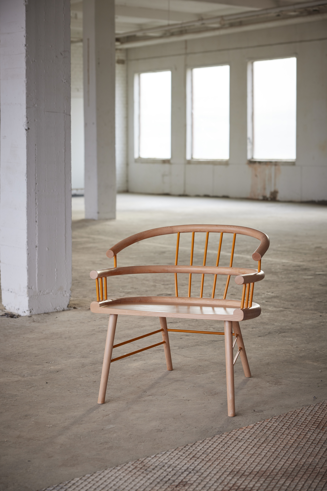

THE CHAIR CIRCA
"Circa" originated from a design assignment undertaken during my studies in furniture design at Jönköping University.

The task at hand was to create a chair following the principles of the stick chair (pinnstol), where the seat functions as the structurally unifying element connecting the backrest and legs. Circa are a contemporary interpretation of a timeless classic. The design of Cirka draws inspiration from the simple beauty of nature and the interplay between soft curves and straight lines. This chair is designed to modestly stand out. Its design, characterized by three arches shaping the seat and backrest, achieves a delicate balance, harmonizing form and function.